Rear Wheel Alignment Adjustment |
for reference.for reference.| 1. Tire Inspection |
Inspect the tire size and wear condition
Inspect the tire pressure
| Tire Size | Tire pressure (front wheels) [{ kgf/cm2} ] | Tire pressure (rear wheels) [{ kgf/cm2} ] |
|---|---|---|
| 205/55R16 | 210(2.1) | |
| 225/45R17 | 230(2.3) | 210(2.1) |
Inspect for suspension modifications and damage to chassis parts
Inspect the tire runout
Inspect the tightening condition of the bolts of related parts
Inspect the related parts for looseness
| 2. Vehicle Height Inspection |
 |
Bounce the corners of the vehicle up and down to stabilize the suspension before inspecting the vehicle height.
| Tire Size | B measurement - A measurement [mm] | D measurement - C measurement [mm] |
|---|---|---|
| 205/55R16 | 101 (FF drive) 102 (4WD drive) | 60 |
| 225/45R17 | 98 | 60 |
| 3. Side Slip Inspection |
Inspect the side slip using a side slip tester.
If the result is not as specified, inspect the wheel alignment.
| 4. Toe-in Inspection |
Bounce the vehicle to stabilize the suspension.
Push the vehicle forward 5m in a straight line by hand.
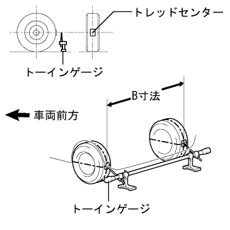 |
Align the pointer height of the toe-in gauge with the height of the rear wheel axle center, and place it behind the tires.
Put tread center marks on the rear of the left and right rear tires, and measure the distance between the marks (B measurement).
Slowly push the vehicle forward to rotate the rear wheels 180°.
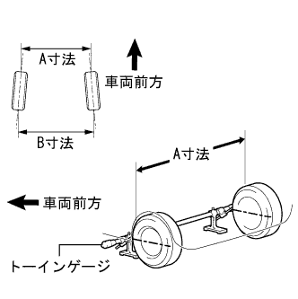 |
Measure the distance between the tread center marks on the front of the rear tires (A measurement).
Calculate the toe-in.
| Toe-in [mm] |
|---|
| 2±2 |
| 5. Toe-in Adjustment |
Inspect Rear Suspension Arm Assembly No.1
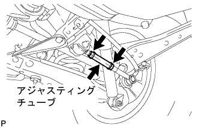 |
Inspect the nuts and adjusting tube visually and by hand. *1
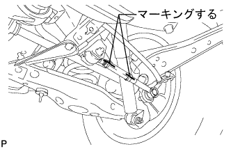 |
Place matchmarks on the arm, nuts and adjusting tube as shown in the illustration. *2
Using SST, apply rotational torque to the adjusting tube in the extending and retracting directions, and check that the matchmark lines do not shift. *3
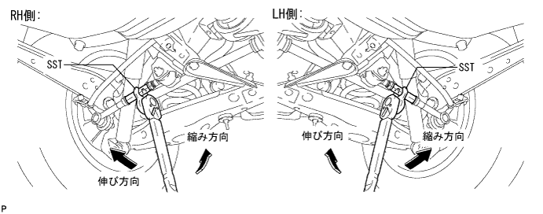
While holding the adjusting tube, using SST, apply rotational torque to the ball joint side nut in the loosening and tightening directions, and check that the matchmark lines do not shift. *4
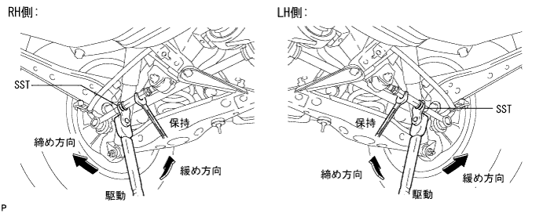
If looseness of the adjusting tube or nuts is found in steps *1 to *4, replace rear suspension arm assembly No.1.
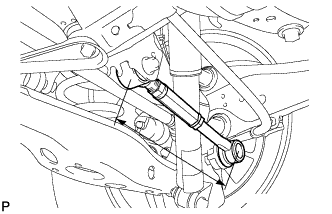 |
Measure the lengths of the left and right rear suspension arm assemblies No.1.
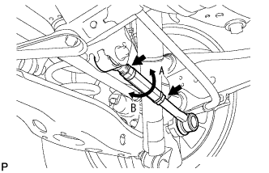 |
Loosen the 2 lock nuts of the adjusting tube.
If the difference in length between the left and right rear suspension arm assemblies No.1 is not within the standard, adjust it to within the standard using the following method.
If the toe-in is out of the standard toward the toe-in side, turn the adjusting tube of the shorter suspension arm assembly No.1 in the direction that lengthens the arm to adjust the left-right difference to within the standard.
If the toe-in is out of the standard toward the toe-out side, turn the adjusting tube of the longer suspension arm assembly No.1 in the direction that shortens the arm to adjust the left-right difference to within the standard.
Measure the toe-in again.
Turn the left and right adjusting tubes by equal amounts in the same direction to adjust the toe-in.
| Toe-in [mm] |
|---|
| 2±1 |
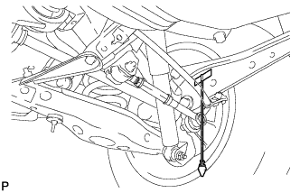 |
Attach a string and weight to the vehicle as shown in the illustration.
With the vehicle level, check the vertical direction using the string and weight.
Securely hold the adjusting tube and, using SST, temporarily tighten the ball joint side nut. *5
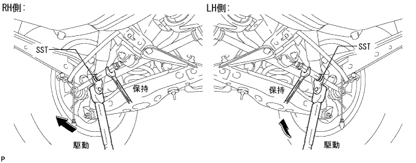
Turn the adjusting tube as shown in the illustration to adjust so that the ball joint socket is parallel to the string. *6
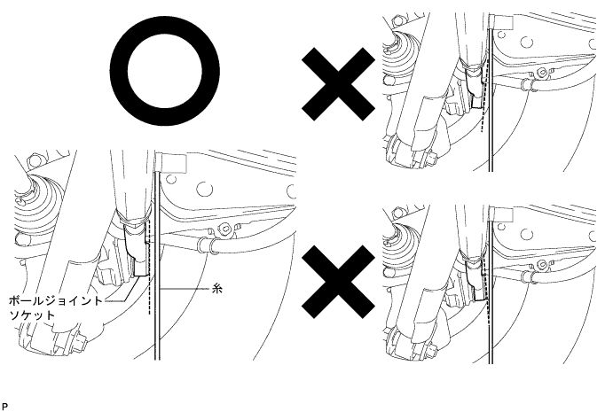
Securely hold the adjusting tube and, using SST, loosen the ball joint side nut. *7
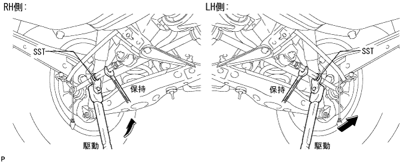
Securely hold the adjusting tube and, using SST, fully tighten the nuts in the order: rubber bushing side → ball joint side → rubber bushing side. *8
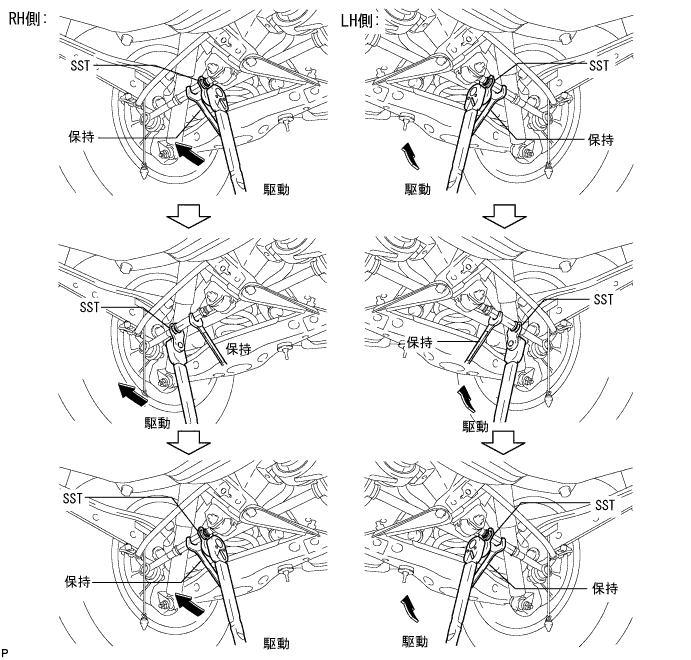
Securely hold the adjusting tube again and, using SST, retighten the nuts in the order: rubber bushing side → ball joint side → rubber bushing side. (Final check) *9
Check that the ball joint socket is parallel to the string.
Remove the string and weight from the vehicle.
| 6. Camber Inspection |
Lift up the vehicle on a level surface.
Check that rear suspension arm assembly No.1, rear suspension arm assembly No.2 and the rear upper control arm assembly are not bent or otherwise damaged.
Lower the vehicle and bounce it up and down several times to stabilize the suspension.
Install SST (tire clamp compensator). (Refer to the procedure)
Calibrate the tire clamp compensator. (Refer to the procedure)
Inspect the camber.
| Vehicle Model | Drive Type | Camber | Left-right difference limit |
|---|---|---|---|
| AZE156H system | FF | -1°00’±45’ | 0°45' or less |
| AZE154H system | 4WD | -1°10’±45’ | 0°45' or less |
| GRE156H system | FF | -1°00’±45’ | 0°45' or less |
Remove the camber-caster-kingpin gauge and tire clamp compensator.
| 7. Check Front Wheels Straight-ahead Position |
| 8. Disconnect Battery Negative Terminal |
| 9. Connect Battery Negative Terminal |
| 10. Yaw Rate & G Sensor 0-point Acquisition and Test Mode Inspection |
Perform the yaw rate & G sensor 0-point acquisition and test mode inspection.
for reference.| 11. Steering Sensor 0-point Acquisition Check |
)| 12. Initialization after Battery Terminal Disconnection and Reconnection |
)